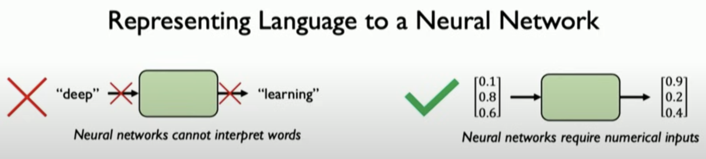
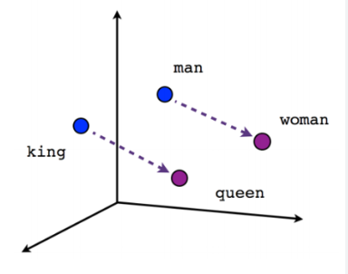
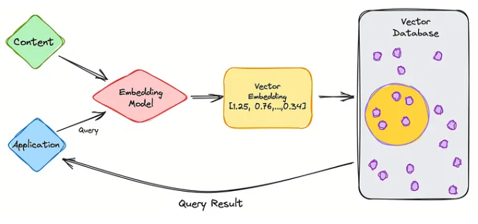
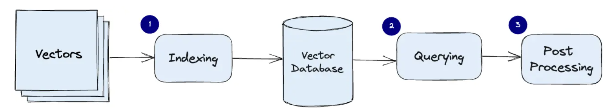

17 Hands-On Lab: Foundation Models
17.1 Overview
The hands-on lab on foundation models will focus on building and applying foundation models for some example use cases. The main goal of this session is to get more familiarized with foundation models and in interacting with them.
17.2 Source Code
Visit https://github.com/ncsa/cyber2a-workshop and follow the instructions in the README file to set up and run the Jupyter Notebooks used in this hands-on lab.
17.3 Image Segmentation using Segment Anything Model 2 (SAM 2)
17.3.1 Background
Image segmentation is a fundamental computer vision technique of dividing an image into one or more regions or objects [1]. Promptable Visual Segmentation (PVS) is a new type of segmentation that combines the flexibility of prompts with the power of computer vision models to enable users to segment images interactively based on prompts.
For this section of the foundational model hands-on session, we will use the [2]. SAM 2 is a foundation model for the PVS task trained on large-scale generic data that can predict object segmentation masks based on input prompts. These prompts include points, bounding boxes (e.g., rectangles), masks, or combinations. The model converts the image into an image embedding (a dense vector representation of the image), which it then uses to predict segmentation masks based on a user prompt.
One prominent class in the SAM 2 source code is SAM2ImagePredictor, which provides an easy interface to the model. Users can attach an input image to the model using its set_image method, which calculates the image embeddings. Then, the users can use the predict method to share prompts (user inputs) that help with the segmentation mask prediction.
The Jupyter Notebook for this hands-on session is available within the https://github.com/ncsa/cyber2a-workshop repository here. You can clone or download this repository directly from GitHub.
This notebook reuses some code segments (e.g., helper methods, imports, loading the model, etc.) from the image predictor example initially published in the SAM 2 source code repository. SAM 2 source code is released under the Apache License, Version 2.0, and Meta Platforms, Inc. and affiliates hold the copyright for the image_predictor_example.ipynb notebook. We have adapted and modified the image predictor example notebook to use data files from Arctic datasets and included specific activities for the Cyber2A Workshop.
17.3.2 Data
Images used in this hands-on lab section are from the LeConte Glacier Unmanned Aerial Vehicle (UAV) imagery dataset [3]. Specifically, we use a low-resolution version (640 x 427) of images with IDs 20180917-112527 and 20180917-115018 from the zip file located at this URL.
Before continuing with the rest of the sections, open the segmentation.ipynb notebook from the running Jupyter Notebook server.
17.3.3 Environment Setup
First, we import the necessary packages, download SAM 2 model checkpoints, and define methods for visualizing the results. Here, model checkpoints are files containing model weights and architecture saved after a certain number of iterations of model training. These checkpoints are used to load the model and make predictions.
Show code
Now, we use the code to select the device for computation. Depending on the machine running the segmentation notebook, you could choose between a CPU, GPU, or Metal Performance Shaders (MPS) for computation. The code snippet below shows how to select the device for computation.
Show code
# Copyright (c) Meta Platforms, Inc. and affiliates.
# Select the device for computation. We will be using CUDA to run this notebook. Other options are provided for running this notebook in different environments.
if torch.cuda.is_available():
device = torch.device("cuda")
elif torch.backends.mps.is_available():
device = torch.device("mps")
else:
device = torch.device("cpu")
print(f"using device: {device}")
if device.type == "cuda":
# use bfloat16 for the entire notebook
torch.autocast("cuda", dtype=torch.bfloat16).__enter__()
# turn on tfloat32 for Ampere GPUs (https://pytorch.org/docs/stable/notes/cuda.html#tensorfloat-32-tf32-on-ampere-devices)
if torch.cuda.get_device_properties(0).major >= 8:
torch.backends.cuda.matmul.allow_tf32 = True
torch.backends.cudnn.allow_tf32 = True
elif device.type == "mps":
print(
"\nSupport for MPS devices is preliminary. SAM 2 is trained with CUDA and might "
"give numerically different outputs and sometimes degraded performance on MPS. "
"See e.g. https://github.com/pytorch/pytorch/issues/84936 for a discussion."
)Next, we use the code to define methods for visualizing the results. The show_mask method displays a single segmentation mask, the show_points method displays the points, the show_box method displays the bounding box, and the show_masks method displays the image with the segmentation masks, points, and bounding boxes.
Show code
# Copyright (c) Meta Platforms, Inc. and affiliates.
np.random.seed(3)
def show_mask(mask, ax, random_color=False, borders = True):
if random_color:
color = np.concatenate([np.random.random(3), np.array([0.6])], axis=0)
else:
color = np.array([30/255, 144/255, 255/255, 0.6])
h, w = mask.shape[-2:]
mask = mask.astype(np.uint8)
mask_image = mask.reshape(h, w, 1) * color.reshape(1, 1, -1)
if borders:
import cv2
contours, _ = cv2.findContours(mask,cv2.RETR_EXTERNAL, cv2.CHAIN_APPROX_NONE)
# Try to smooth contours
contours = [cv2.approxPolyDP(contour, epsilon=0.01, closed=True) for contour in contours]
mask_image = cv2.drawContours(mask_image, contours, -1, (1, 1, 1, 0.5), thickness=2)
ax.imshow(mask_image)
def show_points(coords, labels, ax, marker_size=375):
pos_points = coords[labels==1]
neg_points = coords[labels==0]
ax.scatter(pos_points[:, 0], pos_points[:, 1], color='green', marker='*', s=marker_size, edgecolor='white', linewidth=1.25)
ax.scatter(neg_points[:, 0], neg_points[:, 1], color='red', marker='*', s=marker_size, edgecolor='white', linewidth=1.25)
def show_box(box, ax):
x0, y0 = box[0], box[1]
w, h = box[2] - box[0], box[3] - box[1]
ax.add_patch(plt.Rectangle((x0, y0), w, h, edgecolor='green', facecolor=(0, 0, 0, 0), lw=2))
def show_masks(image, masks, scores, point_coords=None, box_coords=None, input_labels=None, borders=True):
for i, (mask, score) in enumerate(zip(masks, scores)):
plt.figure(figsize=(10, 10))
plt.imshow(image)
show_mask(mask, plt.gca(), borders=borders)
if point_coords is not None:
assert input_labels is not None
show_points(point_coords, input_labels, plt.gca())
if box_coords is not None:
# boxes
show_box(box_coords, plt.gca())
if len(scores) > 1:
plt.title(f"Mask {i+1}, Score: {score:.3f}", fontsize=18)
plt.axis('off')
plt.show()17.3.4 Example Image 1
Now, we read the first example image (data/images/20180917-112527-reduced.jpg), create an object, and display it with a grid for estimating point and box coordinates.
17.3.5 Loading the SAM 2 model and configuration
Now, let’s load the SAM 2 model and configuration file. We load the model from the SAM_checkpoints directory and the configuration file from the configs directory. We use the sam2.1_hiera_large model checkpoint and the sam2.1_hiera_l.yaml configuration file. Other model versions and their corresponding configuration files can also be used, but the accuracy of the segmentation outputs may vary.
Show code
from sam2.build_sam import build_sam2
from sam2.sam2_image_predictor import SAM2ImagePredictor
sam2_checkpoint = "SAM_checkpoints/sam2.1_hiera_large.pt"
model_cfg = "configs/sam2.1/sam2.1_hiera_l.yaml"
sam2_model = build_sam2(model_cfg, sam2_checkpoint, device=device)
predictor = SAM2ImagePredictor(sam2_model)Now, we process the image to produce an image embedding by calling the SAM2ImagePredictor.set_image method. The SAM2ImagePredictor object stores this embedding and stores the subsequent mask prediction.
17.3.6 Specifying an object or region using a single point
In this example image, to prompt for the glacier region, let’s choose a point on it.
Points are a type of input to the model. They’re represented in (x,y) format and have corresponding labels 1 or 0, which represent the foreground and background, respectively. As we will see later, we can input multiple points, but here, we use only one. The show_points method displays the selected point using a star icon.
Show code
Output:
17.3.7 Predicting the segmentation mask
Now, we predict the segmentation mask using the selected point as input. The predict method of the SAM2ImagePredictor object predicts the segmentation mask based on the input point. The show_masks utility method displays the segmentation mask on the image.
Show code
masks, scores, logits = predictor.predict(
point_coords=input_point,
point_labels=input_label,
multimask_output=True,
)
sorted_ind = np.argsort(scores)[::-1] # Sorting the scores in decreasing order
masks = masks[sorted_ind]
scores = scores[sorted_ind]
logits = logits[sorted_ind]
show_masks(image, masks, scores, point_coords=input_point, input_labels=input_label, borders=True)Output:
17.3.8 Activity 1: Specifying an object or region using multiple points
We can see that the single input point can be ambiguous, and the model has returned multiple sub-regions within the glacier image. We can alleviate this by providing multiple points as input. We can also provide a mask from a previous model iteration to help improve the prediction. When specifying a single object with multiple prompts, we can ask the model to generate a single mask by setting multimask_output=False.
Show code
# E.g., input format for specifying two points
# input_point = np.array([[x1, y1], [x2, y2]])
# input_label = np.array([1, 1])
# TODO: In the below piece of code, replace "None" with your two input points. You can specify more points if needed, but please make sure to increase the labels as well.
input_point = np.array([[600, 400], [500, 200]])
input_label = np.array([1, 1])For example, we can use [600, 400] and [500, 200] as the two points to specify the glacier region.
Show code
input_point = np.array([[600, 400], [500, 200]])
input_label = np.array([1, 1])
mask_input = logits[np.argmax(scores), :, :] # Choose the model's best mask from previous iteration
masks, scores, _ = predictor.predict(
point_coords=input_point,
point_labels=input_label,
mask_input=mask_input[None, :, :],
multimask_output=False,
)
show_masks(image, masks, scores, point_coords=input_point, input_labels=input_label)Output:
We can see that providing multiple points as input has helped the model to predict a more accurate segmentation mask for the glacier region.
17.3.9 Example Image 2
Now, let’s read the second example image, create an object, and display it with grid for estimating point and box coordinates.
Show code
Output:
17.3.10 Activity 2: Specifying an object or region using multiple points (foreground and background)
A background point (with label 0) can be supplied to exclude the glacier and water surrounding it and just include the glacial discharge.
Show code
# E.g., input format for specifying three points
# input_point = np.array([[x1, y1], [x2, y2], [x3, y3]])
# input_label = np.array([1, 1, 0])
# TODO: In the below piece of code, use two or three input points, of which at least one needs to be a background point (water). You can specify more points if needed, but please make sure to increase the labels as well.
input_point = None
input_label = NoneFor example, we can use [600, 200] and [600, 300] as the foreground points and [600, 250] as the background point to specify the glacial discharge region.
Show code
input_point = np.array([[600, 200], [600, 300], [600, 250]])
input_label = np.array([1, 1, 0])
mask_input = logits[np.argmax(scores), :, :] # Choose the model's best mask from previous iteration
masks, scores, _ = predictor.predict(
point_coords=input_point,
point_labels=input_label,
multimask_output=False,
)
show_masks(image, masks, scores, point_coords=input_point, input_labels=input_label)Output:
We can see that with three points, including one background point, the model has predicted a large section of the glacial discharge region. With additional points (foreground and/or background), users can further guide the model to predict more accurate segmentation masks.
17.3.11 Activity 3: Specifying a specific object with a box
We will specify the glacial discharge region using a bounding box in this activity. The bounding box is represented as [x1, y1, x2, y2], where (x1, y1) is the top-left corner and (x2, y2) is the bottom-right corner of the box.
Show code
# E.g., input format for specifying a box
# input_box = np.array([x1, y1, x2, y2])
# TODO: In the below piece of code, replace "None" with a box coordinate.
input_box = NoneFor example, we can use [400, 150, 640, 400] as the bounding box to specify the glacial discharge region.
Show code
input_box = np.array([400, 150, 640, 400])
masks, scores, _ = predictor.predict(
box_coords=input_box,
multimask_output=False,
)
show_masks(image, masks, scores, box_coords=input_box)Output:
The model has predicted the glacial discharge region based on the bounding box input, but the results are not perfect. Additional prompts, along with the bounding box, can improve this.
We have provided three optional activities for you to try out in the segmentation notebook, including one that does automatic segment generation without prompts. Feel free to experiment with different prompts and see how the model responds.
17.4 Retrieval Augmented Generation (RAG) Hands-On
We will use Langchain framework for this section of the hands-on session. Langchain is a framework that provides tools and libraries for building and deploying AI models. It is built on top of PyTorch and HuggingFace transformers.
Suggested code references: - Langchain RAG from scratch github - Langchain RAG tutorial
Session hands-on code in github.com/ncsa/cyber2a-workshop
Session technical details in course book : cyber2a.github.io/cyber2a-course/sections/foundation-models.html
In this section, we will build a chatbot using the RAG system, i.e., a chatbot that has access to your specific knowledge base and answers questions related to that knowledge base.
17.4.1 RAG Recap
| Without RAG | With RAG |
|---|---|
| No ability to access a specific knowledge/domain | Point to a knowledge base |
| No sources | Sources cited in LLM response |
| Hallucinations | LLM response is grounded by relevant information from knowledge base |
| Out-of-date information | Update the knowledge base with new information |

17.4.2 RAG
We can think of the RAG system as combining two techniques: 1. Retrieval 2. Generation , where the Generation step is augmented or improved by the Retrieval step.
A specialized database typically retrieves the data; an LLM normally does the generation part.
- Retrieval
- Setup a knowledge base
- Retrieve documents relevant to the user query
- Generation
- Using LLMs
- Use the retrieved documents as context
17.4.3 Hands-on Environment Setup
LLM For the hands-on session on RAG, we will use OpenAI GPT-4o-mini and a Llama3.2:8b model hosted on an Ollama instance. You will need an OpenAI API key to access the OpenAI models. To access the Llama model, you must set up an Ollama instance and have an API key associated with that instance. Details on setting up an Ollama instance are available here. Users can also download a Llama model on their local machine and run this hands-on code without an Ollama instance. However, we recommend using an Ollama instance as this would enable api calls (curl requests) to access the LLM.
Compute requirements There are no GPU requirements for this hands-on. However, we recommend some memory on your local system, as we will be using your device’s local memory for a small database. We recommend testing out the code for this hands-on session in a Jupyter notebook. For instructions on launching a Jupyter notebook, see here.
Code The code is available at github.com/ncsa/cyber2a-workshop. Feel free to clone or download this repo directly from GitHub. Steps to clone the repo and access the rag.ipynb file:
- Open a terminal
- Run command:
git clone https://github.com/ncsa/cyber2a-workshop - Navigate to the
foundation_models/hands_ondirectory in the cloned repo.
Data requirements If you clone or download the repo, a data directory will be created. Feel free to add your favorite documents, such as TXT, PDF, CSV, or docx files, to the data/docs directory. We will insert these documents into our specialized database.
Environment variables You will find an
env.examplefile in the GitHub repo. This file will provide you with the environment variables required for this course. Add your OpenAI API key, Ollama API key, your data folder (currently data/docs), and a data collection name (e.g., data-collection). The OpenAI API key will be used to access the OpenAI models. Ollama API key will be used to access your Ollama instance. The collection name is a way to recognize a collection/table in the specialized database, that we will be setting up soon. Edit theenv.examplefile to contain your values and save the file. Renameenv.exampletoenv.txt.Package requirements This tutorial will require the following list of packages.
jupyter
pandas
python-dotenv==1.0
qdrant-client==1.12
# langchain
langchain==0.3
langchain-community==0.3
langchain-core==0.3
langchain-openai==0.2
langchainhub==0.1
# openai
openai==1.54
# rst file loaders
# pandoc
pypandoc==1.14
unstructured==0.16Instructions for installing the required packages:
- Create a virtual environment with python version not less than 3.10.
- Use conda/miniconda to set up a virtual environment. If you have a virtual environment with python>=3.10 with a jupyter kernel, use that env/kernel and skip the below steps.
- Download the latest Miniconda3 installer from the Miniconda web page.
- From the Terminal (Mac/Linux) or Command Prompt (Windows) add conda-forge package repository/channel to your environment:
conda config --add channels conda-forge- Create the python environment (for this example we choose name rag-python3.9):
conda create -n rag-python3.10 python=3.10- Activate the environment:
python conda activate rag-python3.10
- Activate the environment:
- Use conda/miniconda to set up a virtual environment. If you have a virtual environment with python>=3.10 with a jupyter kernel, use that env/kernel and skip the below steps.
- Create a
requirements.txtfile and copy-paste the above packages as-is. You could also use therequirements.txtfile from the cloned Github repositorycyber2a-workshop - Type
pip install -r requirements.txt
Let’s start by importing some basic python packages.
Show code
# basic imports
import os
import json
import logging
import sys
import pandas as pd
from dotenv import load_dotenv
load_dotenv('env.txt', override=True)
# create and configure logger
logging.basicConfig(level=logging.INFO, datefmt='%Y-%m-%dT%H:%M:%S',
format='%(asctime)-15s.%(msecs)03dZ %(levelname)-7s : %(name)s - %(message)s',
handlers=[logging.StreamHandler(sys.stdout)]
)
# create log object with current module name
log = logging.getLogger(__name__)17.4.4 RAG - Retrieval-Augmented Generation
We will focus on the “retrieval” part of RAG for this section.
RAG - Retrieval Steps
- Prepare data
- Create a database and insert data
- Search the database and retrieve relevant documents according to the search query.
As mentioned earlier, the RAG system gives the LLM access to our knowledge base, which has specific information for our use case.
17.4.4.1 Data Preparation
Let’s consider that our knowledge base contain only textual data. The data present in the GitHub repo contains proceedings from the Arctic Data Symposium 2023
17.4.4.1.1 Load data
Since we have different file types, we will need different types of data loaders to read these different data formats. - Langchain provides different data loaders for different file types - Eg: Langchain CSVLoader is essentially a wrapper for Python csv.DictReader class - Data is loaded into Langchain Document object format - The Document class has page_content and metadata attributes. - The page_content is the textual content parsed from the document files. - The metadata can be user-defined or default (class defined) key-value pairs. These key-value pairs can be used for filtering the documents retrieved from the database. - By default, each file type has its own metadata content. Eg: PDF file has source and page. - Filtering methods are not shown in this course. These methods will be well-documented in the database tool that you choose (explained later in the vectorDB section).
- For details on langchain packages, please refer to their documentation and source-code.
- If using an IDE (PyCharm, VSCode, etc), Ctrl+click, or Command+click on the package and it should open-up its source code.
Now, let’s load some data. This code loads all files in a directory. For now, we have only PDF files.
Show code
# data loaders
from langchain_community.document_loaders import CSVLoader, DataFrameLoader, PyPDFLoader, Docx2txtLoader, UnstructuredRSTLoader, DirectoryLoader
# Defining a class for data loaders. All data loaders are defined in this class
class DataLoaders:
"""
various data loaders
"""
def __init__(self, data_dir_path):
self.data_dir_path = data_dir_path
def csv_loader(self):
csv_loader_kwargs = {
"csv_args":{
"delimiter": ",",
"quotechar": '"',
},
}
dir_csv_loader = DirectoryLoader(self.data_dir_path, glob="**/*.csv", use_multithreading=True,
loader_cls=CSVLoader,
loader_kwargs=csv_loader_kwargs,
)
return dir_csv_loader
def pdf_loader(self):
dir_pdf_loader = DirectoryLoader(self.data_dir_path, glob="**/*.pdf",
loader_cls=PyPDFLoader,
)
return dir_pdf_loader
def word_loader(self):
dir_word_loader = DirectoryLoader(self.data_dir_path, glob="**/*.docx",
loader_cls=Docx2txtLoader,
)
return dir_word_loader
def rst_loader(self):
rst_loader_kwargs = {
"mode":"single"
}
dir_rst_loader = DirectoryLoader(self.data_dir_path, glob="**/*.rst",
loader_cls=UnstructuredRSTLoader,
loader_kwargs=rst_loader_kwargs
)
return dir_rst_loaderLoad the data
Show code
# load data
data_dir_path = os.getenv('DATA_DIR_PATH', "data/docs")
data_loader = DataLoaders(data_dir_path=data_dir_path)
log.info("Loading files from directory %s", data_dir_path)
# instantiate loaders
dir_csv_loader = data_loader.csv_loader()
dir_word_loader = data_loader.word_loader()
dir_pdf_loader = data_loader.pdf_loader()
dir_rst_loader = data_loader.rst_loader()
# call load method
csv_data = dir_csv_loader.load()
word_data = dir_word_loader.load()
pdf_data = dir_pdf_loader.load()
rst_data = dir_rst_loader.load()Since our test data only has pdf documents, only the pdf_data will have values. Let’s see how the first document looks like :
# only printing the first document in pdf_data
for doc in pdf_data:
print(doc)
breakThe above code will display the first document. The page_content will be the text content from the document and metadata gives you the page number and source file. The metadata field currently has default values, set by the class the document is loaded from (in this case PDFLoader class). For other classes, metadata would differ. For example, if loading a CSV file using CSVLoader, the metadata will have row number instead of page number. Users have the option to customize metadata as required by simple code changes.
As seen from the page_content and metadata value, the first document only has the text data from the first page. Langchain PDFLoader loads pdf documents in pages. Each document will be one pdf page.
17.4.4.1.2 Format the data
As the previous code block shows, each document is in a Document class with attributes page_content and metadata. The LLM can only access the textual content (page_content), so let’s reformat the documents accordingly. However, we still need metadata, which is helpful for filtering purposes.
Users could also customize metadata to have similar key-value pairs across different documents. This would be helpful if several types of documents are inserted into one database and the metadata is used to filter across them.
Steps implemented in the below code block: - Convert data to a list of texts and metadata - Custom metadata is set so that metadata is same for all different data sources.
Show code
# get text and metadata from the data
def get_text_metadatas(csv_data=None, pdf_data=None, word_data=None, rst_data=None):
"""
Each document class has page_content and metadata properties
Separate text and metadata content from Document class
Have custom metadata if needed
"""
csv_texts = [doc.page_content for doc in csv_data]
# custom metadata
csv_metadatas = [{'source': doc.metadata['source'], 'row_page': doc.metadata['row']} for doc in csv_data] # default metadata={'source': 'filename.csv', 'row': 0}
pdf_texts = [doc.page_content for doc in pdf_data]
pdf_metadatas = [{'source': doc.metadata['source'], 'row_page': doc.metadata['page']} for doc in pdf_data] # default metadata={'source': 'data/filename.pdf', 'page': 8}
word_texts = [doc.page_content for doc in word_data]
word_metadatas = [{'source': doc.metadata['source'], 'row_page': ''} for doc in word_data]
rst_texts = [doc.page_content for doc in rst_data]
rst_metadatas = [{'source': doc.metadata['source'], 'row_page': ''} for doc in rst_data] # default metadata={'source': 'docs/images/architecture/index.rst'}
texts = csv_texts + pdf_texts + word_texts + rst_texts
metadatas = csv_metadatas + pdf_metadatas + word_metadatas + rst_metadatas
return texts, metadatas
texts , metadatas = get_text_metadatas(csv_data, pdf_data, word_data, rst_data)Let’s print the number of texts and metadata
print("Number of PDF texts: ", len(texts))
print("Number of PDF metadata: ", len(metadatas))17.4.4.1.3 Chunking
Chunking involves breaking large amounts of data into smaller, more manageable pieces. LLMs have a limited context window and cannot take in the entire dataset at once. For example, GPT-4 has a token limit of 128k. The Langchain document class also chunks PDF documents by page. However, we will need to make sure that all the content fits within the LLM token limit of 128k, so we will try splitting the documents meaningfully. We first split by pages, then by sections, then by paragraphs, then by new lines, then by sentences, by words, and lastly by characters (e.g., what if there’s a word with more than 128k characters!). This is just to ensure that no content is lost.

Steps implemented in the below code block: - Split texts into chunks - Return a list of document chunks (list of langchain document class) - Here, we select a chunk size of 1000 and an overlap of 200 tokens. There is no set rule for this choice. However, this is a recommended pattern. - Chunk sizes determine the granularity of information being searched for. - The chunk size should be smaller if very granular information is required. If the chunk size is larger, the overall content of the documents is returned.
Show code
from langchain.text_splitter import RecursiveCharacterTextSplitter
from langchain.schema import Document
from typing import List
text_splitter = RecursiveCharacterTextSplitter.from_tiktoken_encoder(
chunk_size=1000,
chunk_overlap=200,
separators=[
"\n\n", "\n", ". ", " ", ""
] # try to split on paragraphs... fallback to sentences, then chars, ensure we always fit in context window
)
docs: List[Document] = text_splitter.create_documents(texts=texts, metadatas=metadatas)Now, let’s see if the first document changed and how many documents are available after chunking.
print(docs[0])
print("Number of documents: ", len(docs))17.4.4.1.4 Vector embeddings
Neural networks do not understand characters or texts. However, they understand numbers and are really good at numerical computation. Hence, textual data is converted to vectors of real-valued numbers.
 Image source: MIT Deep Learning course slides
Vector embeddings are mathematical representations of data points in a high-dimensional space. In the context of natural language processing:
- Word Embeddings: Individual words are represented as real-valued vectors in a multi-dimensional space.
- Semantic Capture: These embeddings capture the semantic meaning and relationships of the text.
- Similarity Principle: Words with similar meanings tend to have similar vector representations.
The words ‘word embeddings’, ‘vector embeddings’, and ‘embeddings’ will be used interchangeably throughout this course.

In the above vector example, “King” and “Queen” have the same relationship as “man” and “woman.” The “King” is at a similar distance from “man” and “queen” from “woman.”
These word embeddings are learned by feeding a model vast amounts of text. Models specialized in generating these text embeddings are called embedding models. Word2Vec is one of the first (very basic) embedding models. The GloVE model was one of the more popular models that learned word embeddings, i.e., one of the first models that was trained as a word embedding model. There are many open-source embedding models, e.g., Text embedding models from HuggingFace. Check out the HuggingFace Embedding models leaderboard to compare different embedding models. We will be using the OpenAI text embedding model, which, according to OpenAI documentation, has a maximum token limit of 8191.
# embeddings
from langchain_openai import OpenAIEmbeddings
embeddings = OpenAIEmbeddings()And now, we have completed step 1 of RAG RAG - Retrieval Steps
1. Prepare data
Create a knowledge base and insert data
Search the database and retrieve relevant documents according to the search query.
17.4.4.2 Knowledge Database
In the age of burgeoning data complexity and high-dimensional information, traditional databases often fail to efficiently handle and extract meaning from intricate datasets. Enter vector databases, a technological innovation that has emerged as a solution to the challenges posed by the ever-expanding data landscape. (Source: beginner’s blog post on vector DB)
17.4.4.2.1 Vector database
Vector databases have gained significant importance in various fields due to their unique ability to efficiently store, index, and search high-dimensional data points, often referred to as vectors. These databases are designed to handle data where each entry is represented as a vector in a multidimensional space. Vectors can represent a wide range of information, such as numerical features, embeddings from text or images, and even complex data like molecular structures.
Vector databases store data as vector embeddings and are optimized for fast retrieval and similarity search. Vector database records are vectors, and the distance between them corresponds to whether the vectors are similar or not. Vectors that are closer are more similar than vectors that are farther apart.
17.4.4.2.1.1 How vector databases work
Let’s start with a simple example of dealing with an LLM such as ChatGPT. The model has large volumes of data with a lot of content, and they provide us with the ChatGPT application.

So let’s go through the steps of retrieval using vectorDB.
- We first partition the data (to be used in the knowledge base) into chunks
- Use embedding model to create vector embeddings for the data (create indexes)
- Insert data vector embeddings into the database, with some reference to the original content (metadata).
- User query is converted to vector embeddings using the same embedding model used for data.
- VectorDB searches the knowledgebase for vector embeddings similar to the user query.
- VectorDB returns similar document chunks and sends it back to the user.
Now, let’s see how it works in the vector database.

The three main stages that a vector database query goes through are:
- Indexing
As explained in the example above, once the data vector embedding moves into the vector database, it then uses a variety of algorithms to map the vector embedding to data structures for faster searching.
- Querying
Once it has gone through its search, the vector database compares the queried vector (user query) to indexed vectors, applying a similarity metric to find the nearest neighbor.
- Post Processing
Depending on the vector database you use, the vector database will post-process the final nearest neighbor to produce a final output to the query. We could also possibly re-rank the nearest neighbors for future reference.
17.4.4.2.1.2 Inserting documents into VectorDB
17.4.4.2.2 Vector Store
- We will use Qdrant vector store for this example
- For this tutorial, we will utilize local memory for storage
- Qdrant has a docker image that can be used to create a vector store and hosted remotely
- One can configure a Qdrant docker image to run locally and have a Qdrant client that makes API requests.
- Qdrant creates a collection from the inserted documents (similar to a table in SQL databases)
- Blog post on vector stores link
Let’s create a Qdrant vector store in local memory
Show code
# creating a Qdrant vector store in local memory
from langchain_community.vectorstores import Qdrant
# qdrant collection name
collection_name = os.getenv('QDRANT_COLLECTION_NAME', "data-collection")
# create vector store in local memory
vectorstore = Qdrant.from_documents(
documents=docs, # pass in the chunked docs
embedding=embeddings, # use this embedding model
location=":memory:", # Local mode with in-memory storage only
collection_name=collection_name, # give a collection name
)And now, we have completed step 2 of RAG retrieval RAG - Retrieval Steps
1. Prepare data
2. Create a knowledge base and insert data
- Search the database and retrieve relevant documents according to the search query.
17.4.4.3 Retrieve relevant documents
Create a retriever from the vector store. This retriever performs similarity search and retrieves similar document chunks from the Qdrant vector store.
# Retriever to retrieve relevant chunks
retriever = vectorstore.as_retriever()And now, we have completed all 3 steps of RAG retrieval
1. Prepare data
2. Create a vector store and insert data
3. Search the vector store and retrieve relevant documents
17.4.5 RAG - Retrieval-Augmented Generation
We will now move on to the “Generation” part of RAG. Here, the LLMs do most of the heavy lifting.
17.4.5.1 LLM
- LLMs are pre-trained large language models
- Trained to predict the next word (token), given some input text.
- Open-source models - HuggingFace leaderboard
- For this HandsOn, we will use OpenAI GPT-4o-mini and the Ollama Llama3.2:3.2B model hosted by NCSA.
Let’s see how best to communicate/prompt these LLM models for RAG.
17.4.5.2 Prompting
Prompting is a crucial technique in effectively communicating with Large Language Models (LLMs) to achieve desired outcomes without modifying the underlying model. As LLMs become more sophisticated, the art of crafting effective prompts has emerged as a key skill in natural language processing and AI applications. Check out LilianWeng’s blog post [4], medium blog post on prompt engineering.
Prompting is often an iterative process. It typically requires multiple trial-and-error attempts to achieve the desired effect. Each iteration can provide insights into how the model interprets and responds to different input structures.
17.4.5.2.1 Key Elements of Effective Prompting
- Defining a Persona
Assigning the LLM a specific role or behavior can significantly influence its responses. By giving it a defined persona, the model will attempt to respond in a manner that aligns with that role. This can improve the quality and relevance of its answers.
Example: “You are a helpful research assistant.”
This prompt frames the model’s responses to be in line with the behavior expected of a research assistant, such as providing accurate information and being resourceful.
- Setting Guardrails
Guardrails provide boundaries or conditions within which the model should operate. This is particularly useful to avoid misleading or incorrect information. You can ask the model to refrain from answering if it’s unsure of the response.
Example: “If you don’t know the final answer, just say ‘I don’t know’.”
This instructs the LLM to admit uncertainty instead of generating a potentially incorrect answer, thereby increasing reliability.
- Providing Clear Instructions
Giving the LLM specific actions to perform before generating responses ensures that it processes the necessary information correctly. This is important when dealing with tasks like reviewing files or using external data.
Example: “Read the data file before answering any questions.”
This directs the LLM to review relevant materials, improving the quality of the subsequent answers.
- Specifying Response Formats
You can enhance the usefulness of responses by specifying the desired output format. By doing this, you ensure the model delivers information in a form that aligns with your needs.
Example: “Respond using markdowns.”
This ensures the LLM outputs text in Markdown format, which can be helpful for structured documents or technical writing.
17.4.5.2.2 Prompt template
- Use Langchain hub to pull prompts
- easy to share and reuse prompts
- can see what are the popular prompts for specific use cases
- Eg: rlm/rag-prompt
- Use a prompt template Langchain PromptTemplate to generate custom prompts
- includes input parameters that can be dynamically changed
- can include instructions and other prompting patterns
qa_prompt_template = """Use the following pieces of context to answer the question at the end. Please follow the following rules:
1. If the question has some initial findings, use that as context.
2. If you don't know the answer, don't try to make up an answer. Just say **I can't find the final answer but you may want to check the following sources** and add the source documents as a list.
3. If you find the answer, write the answer in a concise way and add the list of sources that are **directly** used to derive the answer. Exclude the sources that are irrelevant to the final answer.
{context}
Question: {question}
Helpful Answer:"""
rag_chain_prompt = PromptTemplate.from_template(qa_prompt_template) Let’s use the rlm/rag-prompt from Langchain hub.
# prompting
from langchain import hub
prompt = hub.pull("rlm/rag-prompt")17.4.5.3 Call LLM
- We will use
- OpenAI GPT-4o-mini and
- Ollama llama3.2 model (hosted by NCSA)
- Each model has its own formats and parameters
- Format the documents as string to pass on to the LLM
# formatting the documents as a string before calling the LLM
def format_docs(docs):
return "\n\n".join(doc.page_content for doc in docs)17.4.5.3.1 Call LLM - without RAG
Show code
# call GPT4o-mini.
# No RAG. Not giving any instructions/context to the LLM.
llm.invoke("What is the capital of the world?")
# Notice the OpenAI LLM response format: content , metadataShow code
# call ollama llama3:latest
from langchain_community.llms import Ollama
ollama_api_key = os.getenv('OLLAMA_API_KEY')
ollama_jwt_token = os.getenv('OLLAMA_JWT_TOKEN')
ollama_headers = {"Authorization": f"Bearer {ollama_api_key}"}
# create a ollama model
ollamallm: Ollama = Ollama(
base_url="https://ollama.software.ncsa.illinois.edu/ollama",
model="llama3.2:latest",
headers=ollama_headers
)# call llama3 model
# No RAG. Not giving any prompt/specific instructions to the LLM
ollamallm.invoke("What is the capital of the world?")
# Notice the Llama LLM response format: plain text17.4.6 RAG System
Let’s bring it all together

- User Submits Query: The user inputs a query into the system. This is the initial step where the user’s request is captured.
- RAG System Query Relevant Documents: The RAG system processes the user’s query and searches for relevant documents.
- Document Database Returns Documents: The document database receives the request for relevant documents and returns the documents it finds to the RAG system.
- Combine The Query & The Documents: The RAG system takes the documents provided by the document database and combines them with the original query.
- LLM Returns Answer: The combined query and documents are sent to a Large Language Model (LLM), which generates an answer based on the information provided.
- RAG System Return Answer to User: Finally, the answer generated by the LLM is sent back through the RAG system.
17.4.6.1 RAG chain with OpenAI
Let’s code the RAG chain with OpenAI LLM
Show code
# rag chain
from langchain_core.output_parsers import StrOutputParser
from langchain_core.runnables import RunnablePassthrough
openai_rag_chain = (
{"context": retriever | format_docs, "question": RunnablePassthrough()}
| prompt # change to custom prompt here
| llm # change openAI llm model here
| StrOutputParser()
)The above code implements the RAG system - Context is the retrieved docs from the retriever/vector db - RunnablePassthrough() is used to pass the user query as is to the chain - format_docs is used to format the documents as a string - prompt is the prompt used to call LLM with - llm is used to call the LLM - StrOutputParser() is used to parse the output from the LLM
Let’s call the OpenAI RAG chain
# call openai rag chain
openai_rag_chain.invoke("What were the goals of the symposium?") # change the user query in the text here# call openai rag chain
# This should ideally give "I dont know" - different from the llm.invoke() method where we do not give a custom prompt
openai_rag_chain.invoke("What is the capital of the world?") # change the user query in the text hereFeel free to try out other queries and test out other prompts.
17.4.6.2 RAG chain with Llama model
Let’s code the RAG chain with Llama
Show code
# call ollama rag chain
ollama_rag_chain.invoke("Who is the president of USA?")
# This should ideally give "I dont know" since the question asked is outside of the context in the vector store.
# None of the document chunks in the vector store will have good similarity with the user query
# Notice that Llama model does not give "I dont know" answer. However, it does say that the information is outside of the context provided.
# Removes hallucinations and grounds the answer. GPT models are generally good at following instructions. OpenAI had an “InstructGPT” model which was specifically trained to follow instructions
17.4.6.3 Adding sources to RAG
Now that we have used RAG to control hallucinations and ground the LLM responses, let’s add source citations to the LLM generated response.
Show code
## adding sources to openai rag chain
from langchain_core.runnables import RunnableParallel
openai_rag_chain_from_docs = (
RunnablePassthrough.assign(context=(lambda x: format_docs(x["context"])))
| prompt
| llm
| StrOutputParser()
)
openai_rag_chain_with_source = RunnableParallel(
{"context": retriever, "question": RunnablePassthrough()}
).assign(answer=openai_rag_chain_from_docs)# call openai rag chain with source
# this will return the answer and the sources (context)
openai_rag_chain_with_source.invoke("What were the goals of the symposium?")openai_rag_chain_with_source.invoke("Why is tundra restoration and rehabilitation important")openai_rag_chain_with_source.invoke("Who is Bernadette Adams?")17.4.6.4 RAG Steps
That concludes the RAG implementation. We have completed all the steps for Retrieval-Augmented Generation (RAG)
- Prepare data
- Create a vector store and insert into db
- Search the vector store and retrieve relevant documents
- Call LLM with the user query and the retrieved documents
- Return the LLM response to the user
17.5 Conclusion
In this hands-on lab on Foundation Models, we learned how to set up and use the Segment Anything Model 2 (SAM 2) for image segmentation tasks and implement a chatbot using the RAG system. We delved into many details related to both use cases and learned how to interact with the foundation models used in them. We hope this hands-on lab has given you a practical understanding of foundation models and how to interact with them.